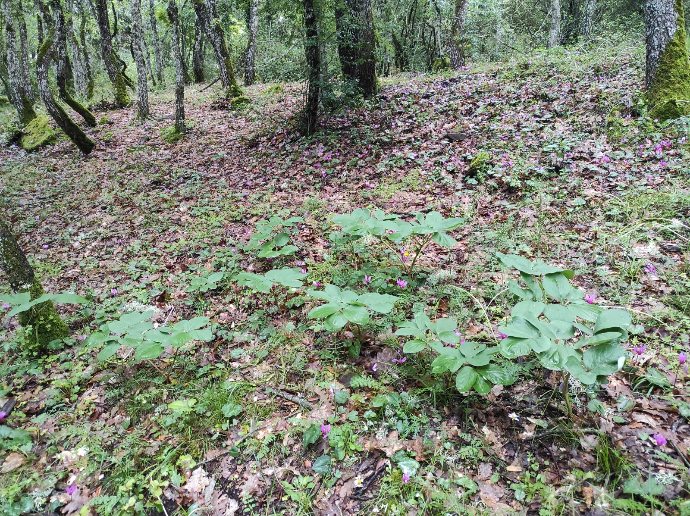
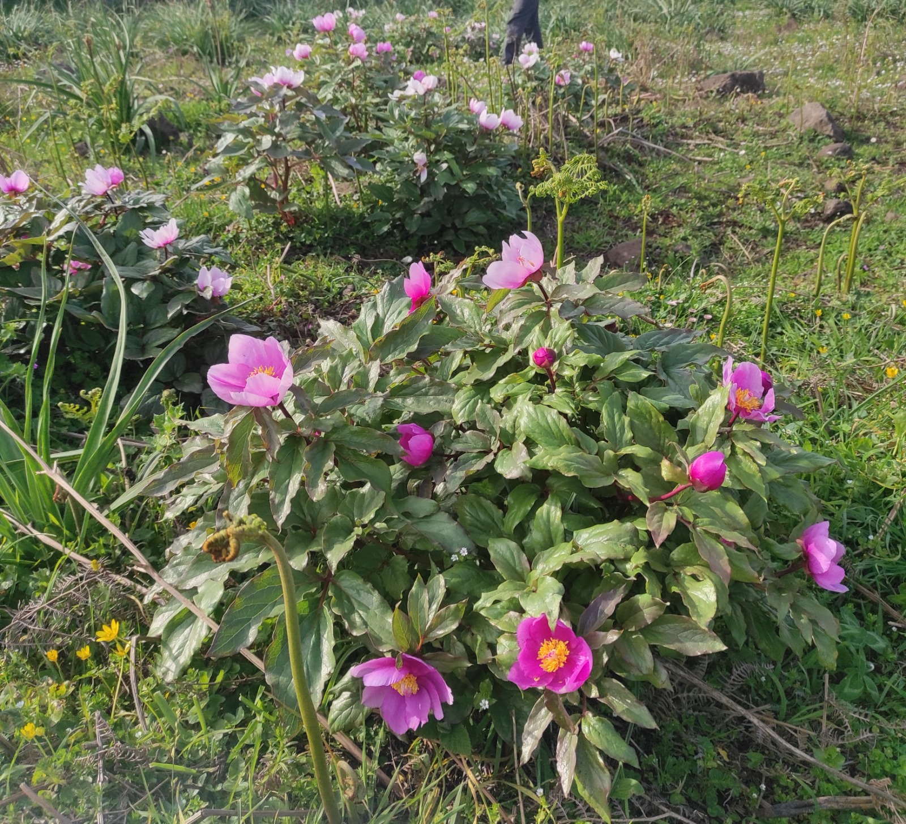
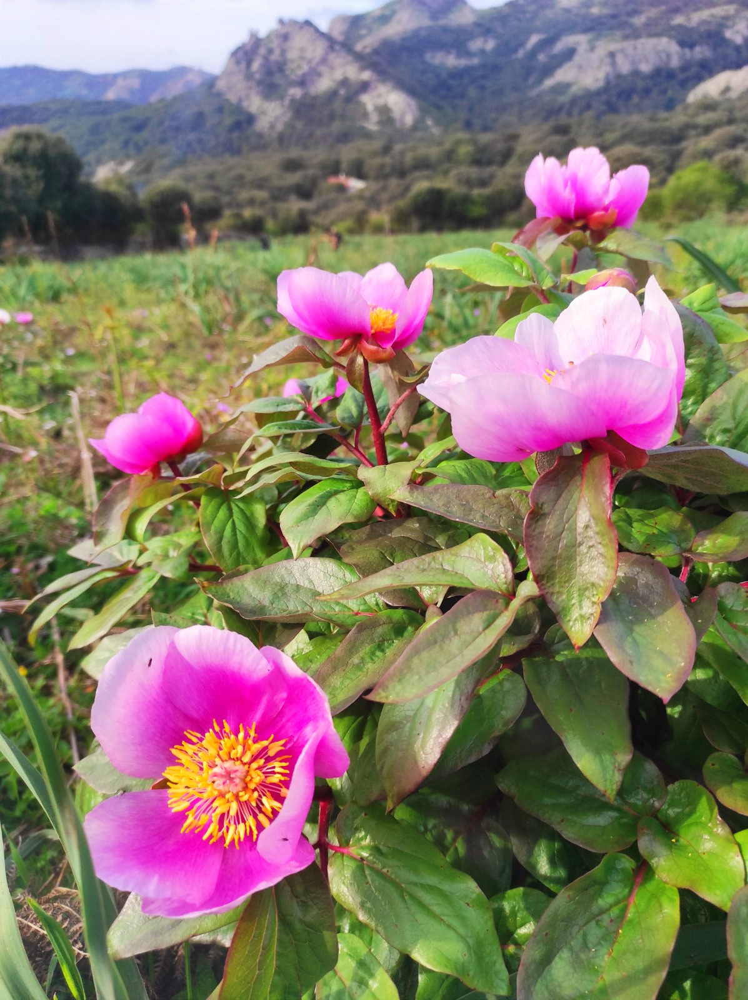
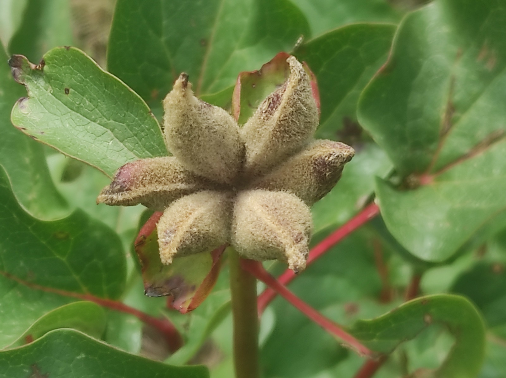

Questa guida aiuta i rilevatori a inviare segnalazioni utili e verificabili.
Nel testo, i termini “scheda di rilevamento”, “app” e “survey” indicano lo stesso strumento usato per raccogliere le segnalazioni.
Segnala solo piante che ritieni compatibili con una peonia selvatica. La segnalazione sarà poi verificata attraverso le foto.
✓
Fiore grande e vistoso, in genere rosa, rosso, porpora o biancastro, non piccolo come un papavero comune.
✓
Foglie divise in lobi ampi, con aspetto diverso dalle foglie sottili o molto frastagliate di molte altre specie erbacee.
✓
Pianta erbacea robusta, spesso isolata o in piccoli gruppi.
🚫 Cosa evitare
Non serve inviare segnalazioni casuali di fiori rossi o rosa se non si vede chiaramente la pianta.
×
Non confondere con papaveri: il papavero ha petali sottili, fusto più esile e foglie diverse.
×
Non inviare foto scattate troppo distanti dove non si identifica la pianta.
×
Non fotografare persone, targhe o abitazioni private, se non inevitabile.
📷 Le 4 fotografie richieste
Le foto sono fondamentali per confermare che la segnalazione sia davvero riferita a una peonia. Ogni segnalazione richiede quattro immagini diverse.
🏞️
1. Foto generale del sito
Inquadra l’ambiente intorno alla pianta: prato, bosco, radura, versante, sentiero o contesto generale.
🌿
2. Insieme di piante
Mostra il gruppo o l’area dove sono presenti più individui, se ci sono più piante vicine.
🌸
3. Pianta più grande
Fotografa bene una singola pianta, possibilmente intera, includendo fusto, foglie e fiore se presente.
🍃
4. Pagina inferiore della foglia
Avvicinati a una foglia e fotografa la parte inferiore. Serve per aiutare la verifica botanica.
🔎 Esempi fotografici per identificare la pianta
Le immagini seguenti sono esempi utili per capire quale pianta fotografare. Alcuni esempi corrispondono direttamente alle foto richieste dal survey, mentre altri servono solo come riferimento per riconoscere meglio la peonia nelle diverse fasi e parti della pianta.

Contesto del sito
Mostra l’ambiente generale: bosco, radura, prato, versante o area circostante.

Insieme di piante
Serve per stimare la presenza di più individui e vedere la distribuzione nel sito.

Fiore
Utile per distinguere la peonia da papaveri o altri fiori rosa/rossi.
Foglia, pagina superiore
Mostra forma, nervature e aspetto generale della foglia.
Foglia, pagina inferiore
È una delle foto richieste nel survey per aiutare la verifica botanica.

Frutto / post-fioritura
Può essere utile quando la pianta non è più in piena fioritura.
📝 Come funziona il survey
Inserisci il nome del rilevatore
Puoi indicare nome, iniziali o un riferimento concordato.
Premi “Acquisisci la posizione”
Il telefono registra automaticamente latitudine e longitudine ma ricorda di attivare la localizzazione. Vedrai comparire una copia di coordinate.
Indica il numero stimato di piante a vista
Scegli una delle classi disponibili: 1-9, 10-19, 20-29 o più di 30.
Scatta le quattro fotografie
Tocca ogni riquadro foto e scatta l’immagine richiesta.
Invia la segnalazione
Se non c’è rete, il dato viene salvato localmente e potrai sincronizzarlo quando torni online, semplicemente accedendo alla scheda di rilevamento.
📡 Se manca la rete
Il survey può salvare le segnalazioni in locale. Comparirà un messaggio nella parte bassa dell'app che indica il numero di segnalazioni inevase.
1
Compila normalmente la segnalazione.
2
Se compare un errore di rete, la segnalazione viene salvata in locale.
3
Quando torna internet, le segnalazioni vengono inoltrate in automatico. In caso diverso, premi Sincronizza cache locale.
🔒 Riservatezza del dato
La posizione precisa delle segnalazioni non viene mostrata in una mappa pubblica. Le coordinate sono raccolte per verifica scientifica, monitoraggio e gestione del sito, ma non sono diffuse liberamente.